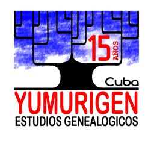
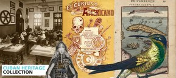

Cambios en nuestros servicios
Gracias por la confianza
Desde MAGENHA queremos agradecer la confianza de todas las personas que nos han acompañado en nuestras investigaciones genealógicas en Cuba.
Como parte de una nueva etapa de desarrollo y especialización de nuestro proyecto, hemos decidido concentrar nuestros nuevos servicios de investigación genealógica en España, con el propósito de seguir perfeccionando nuestro trabajo y ofrecer un servicio cada vez más completo y de calidad.
Los clientes que contraten una investigación genealógica en Cuba hasta el 15 de noviembre de 2026, inclusive, serán los últimos incorporados a este servicio. A partir del 16 de noviembre de 2026 no aceptaremos nuevos clientes para investigaciones en Cuba.
Esta decisión no afecta a nuestros clientes actuales ni anteriores: seguiremos atendiéndolos con total normalidad, tanto en los expedientes ya abiertos como en las nuevas solicitudes que nos hagan, conforme a las condiciones acordadas.
Para quienes deseen comenzar o continuar sus investigaciones en Cuba, compartimos a continuación un directorio de investigadores y organizaciones independientes que ofrecen servicios genealógicos en el país.
Estos investigadores no pertenecen a MAGENHA ni están afiliados a nuestro proyecto. Cada uno desarrolla sus actividades de manera autónoma y acuerda directamente con sus clientes las condiciones de sus servicios.
Si tu investigación te lleva a descubrir antepasados procedentes de España, estaremos encantados de ayudarte a continuar explorando tus raíces familiares en los archivos españoles.
Investigadores y organizaciones
Directorio de investigadores genealógicos en Cuba
Los investigadores y organizaciones aparecen por orden alfabético; el orden no implica ninguna clasificación. Las estrellas muestran la media de las puntuaciones recibidas mediante nuestro formulario de valoración.
La inclusión en este directorio no implica afiliación ni relación comercial con MAGENHA. Las valoraciones representan opiniones de los usuarios y no constituyen una garantía ni una certificación de calidad por parte de nuestro proyecto.

Génesis Cuba
Investigación genealógica y documental
Génesis Cuba es un equipo independiente dedicado a la investigación genealógica y la búsqueda de documentos históricos y familiares en Cuba.
Ofrece servicios de investigación en todo el territorio cubano, con especial presencia en las provincias de Holguín y Las Tunas, ayudando a las personas interesadas en reconstruir su historia familiar y localizar documentación sobre sus antepasados.
- Correo
- genesicuba@gmail.com
Investigador u organización independiente. MAGENHA facilita estos datos con su autorización, pero no interviene en la contratación, los pagos ni la prestación de sus servicios.
L. Z. Flores
Investigador genealógico independiente
Investigador especializado en genealogía histórica cubana, principalmente de los siglos XVII, XVIII y XIX, con experiencia en la localización de partidas sacramentales, expedientes matrimoniales, testamentos, protocolos notariales y otros documentos históricos.
Realiza investigaciones principalmente desde Sancti Spíritus hasta Pinar del Río, con posibilidad de trabajar excepcionalmente en otras regiones de Cuba. Cuenta con experiencia en fondos del Archivo Nacional de Cuba, archivos diocesanos y parroquiales, así como documentación notarial, judicial y militar.
También ofrece servicios de localización de familiares, búsqueda de herederos, visitas a cementerios y lugares de interés familiar y documentación fotográfica en Cuba.
No realiza trabajos orientados a los trámites de nacionalidad española por la Ley de Memoria Democrática (LMD).
- WhatsApp (preferido)
- +53 5 579 6982
- Correo
- lzflores47@gmail.com
Investigador u organización independiente. MAGENHA facilita estos datos con su autorización, pero no interviene en la contratación, los pagos ni la prestación de sus servicios.
MAGENHA
Mapa Genealógico de Haplogrupos
MAGENHA —Mapa Genealógico de Haplogrupos— es un proyecto científico dedicado a la genealogía, los linajes uniparentales Y-DNA y mtDNA, la genética de poblaciones y la historia de las poblaciones.
En Cuba ha realizado investigación documental histórica y genealógica a través de su red de colaboradores locales autorizados: registros católicos parroquiales y diocesanos de bautismo, matrimonio y entierro, registros históricos del Registro Civil donde había acceso, y la reconstrucción y verificación documental de relaciones familiares históricas.
No acepta nuevos clientes en Cuba. A partir del 16 de noviembre de 2026 MAGENHA no acepta nuevos clientes para investigaciones en Cuba; sus clientes actuales y anteriores siguen siendo atendidos con normalidad.
- Correo
- contactmagenha@gmail.com
Servicio propio de MAGENHA, incluido para que sus clientes puedan valorarlo. Sus valoraciones se calculan con el mismo formulario y el mismo método que las del resto del directorio.

YUMURIGEN
Proyecto de Estudio de Genealogía en Cuba
YUMURIGEN es un proyecto independiente dedicado a la investigación genealógica y la reconstrucción de historias familiares en Cuba.
Con más de 16 años de experiencia, realiza investigaciones genealógicas en todo el territorio cubano, ayudando a las personas interesadas en conocer sus raíces, documentar sus antepasados y reconstruir su historia familiar.
- Correo
- yumurigen@gmail.com
Investigador u organización independiente. MAGENHA facilita estos datos con su autorización, pero no interviene en la contratación, los pagos ni la prestación de sus servicios.
Recursos externos
Recursos para investigar tus raíces cubanas
La investigación genealógica comienza muchas veces con una búsqueda personal. Existen archivos, bibliotecas digitales y proyectos de preservación documental que permiten explorar la historia de las familias cubanas desde cualquier lugar del mundo.
Desde MAGENHA compartimos una selección de recursos que pueden ayudarte a localizar antepasados, consultar documentos históricos y profundizar en tus orígenes familiares. Algunos ofrecen acceso directo a registros digitalizados, mientras que otros proporcionan índices, bibliografía y herramientas de investigación.
Genealogía e índices
Cuban Genealogy Club of Miami
Asociación dedicada a la preservación y difusión de la genealogía cubana. Ofrece bases de datos, índices, transcripciones, censos y publicaciones de interés para la investigación de familias cubanas.
FamilySearch — Registros de Cuba
Plataforma genealógica con registros eclesiásticos y otros documentos históricos de Cuba, incluidos bautismos, matrimonios y registros familiares. Algunos materiales requieren una cuenta gratuita o tienen restricciones de acceso.
CubaGenWeb
Proyecto dedicado a la genealogía cubana que reúne índices, referencias documentales, bases de datos y guías de investigación. Incluye recursos sobre apellidos, familias y movimientos migratorios.
Cuba Research Project
Plataforma de investigación genealógica cubana con herramientas de búsqueda de personas y referencias a documentación histórica, incluyendo índices de obras dedicadas a familias cubanas.
Archivos y registros digitalizados
British Library — Endangered Archives Programme
Programa internacional de preservación y digitalización de archivos históricos. Sus proyectos relacionados con Cuba incluyen documentación eclesiástica y otros fondos históricos útiles para la investigación genealógica.
Proyectos sobre Cuba:
- EAP955 (se abre en una pestaña nueva) registros eclesiásticos de las siete villas originales de Cuba
- EAP184 (se abre en una pestaña nueva) colecciones de la diáspora africana en los archivos de la provincia de Matanzas
- EAP843 (se abre en una pestaña nueva) documentos eclesiásticos de Santiago de Cuba, Bayamo, Trinidad y Baracoa
Slave Societies Digital Archive — Vanderbilt University
Archivo digital de registros históricos y eclesiásticos especialmente importante para investigar la historia de personas africanas y afrodescendientes, esclavizadas y libres, en Cuba y otras sociedades atlánticas.
Portal de Movimientos Migratorios — Archivos Estatales de España
Portal de los Archivos Estatales españoles dedicado a la documentación histórica sobre movimientos migratorios. Puede resultar especialmente útil para conectar investigaciones cubanas con los orígenes españoles de los antepasados.
Bibliotecas y documentación histórica
Colección Enrique Hurtado de Mendoza — Florida International University
Colección de gran interés genealógico que reúne materiales sobre familias cubanas, incluyendo manuscritos, genealogías, correspondencia, libros antiguos y documentación histórica.

Cuban Heritage Collection — University of Miami
Colección especializada en la historia y cultura cubanas y de la diáspora. Conserva archivos personales, fotografías, correspondencia, periódicos y otros materiales que pueden ayudar a reconstruir historias familiares.
Digital Library of the Caribbean (dLOC)
Biblioteca digital colaborativa dedicada a la preservación del patrimonio documental del Caribe. Contiene periódicos, libros, fotografías y documentos históricos, incluyendo publicaciones cubanas útiles para búsquedas familiares.
Los recursos aquí presentados pertenecen a instituciones y proyectos independientes de MAGENHA. Su disponibilidad, condiciones de acceso y contenido dependen de sus respectivas entidades responsables. Recomendamos consultar las condiciones de uso de cada colección y contrastar los hallazgos genealógicos con las fuentes documentales originales.
Para ampliar el directorio
¿Conoces otros investigadores genealógicos en Cuba?
Queremos que este directorio siga creciendo y pueda ayudar a más personas interesadas en investigar su historia familiar cubana.
Si conoces a algún investigador u organización que ofrezca servicios de genealogía en Cuba, puedes sugerirnos su contacto mediante el siguiente formulario.
MAGENHA se comunicará con los profesionales sugeridos para solicitar su autorización antes de incluir sus datos en el directorio.
Sugerir un investigadorEl formulario para sugerir investigadores estará disponible próximamente.